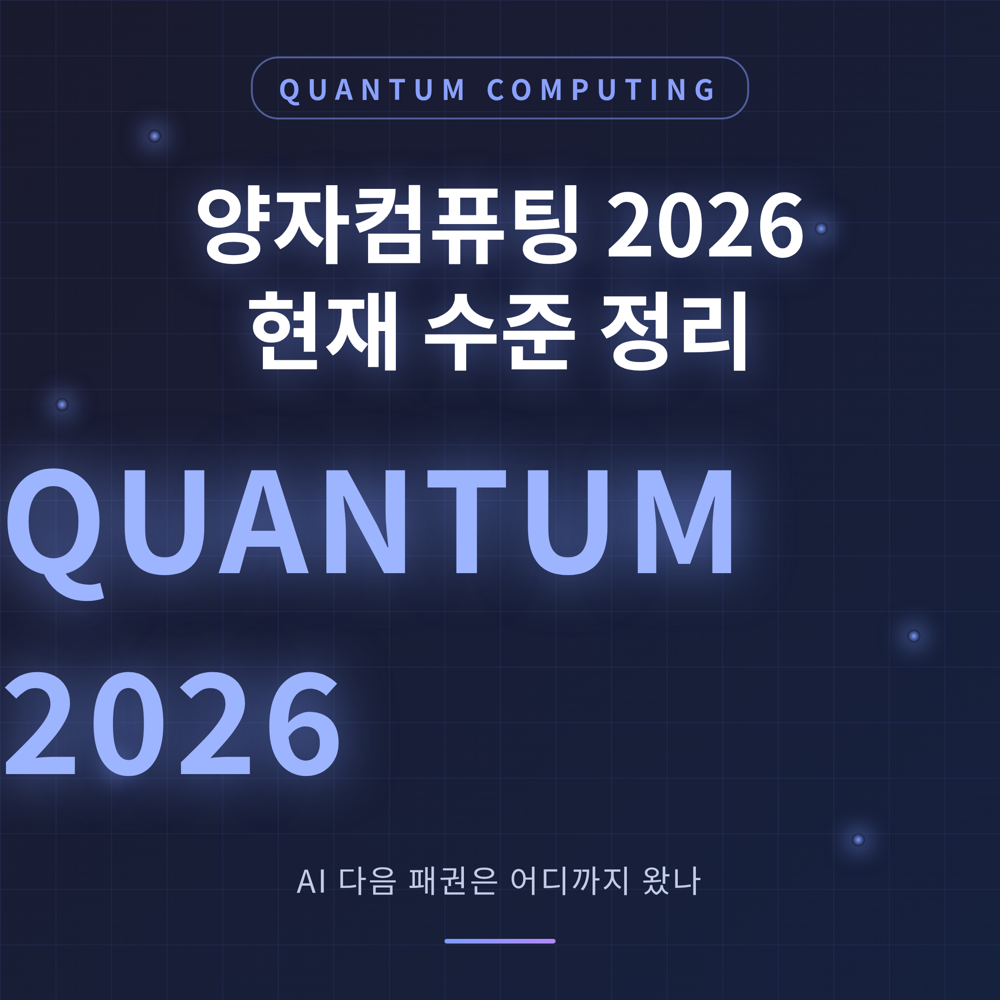
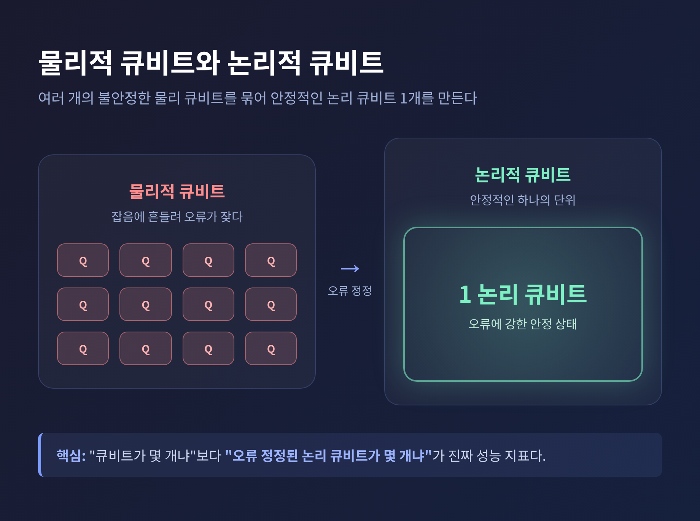
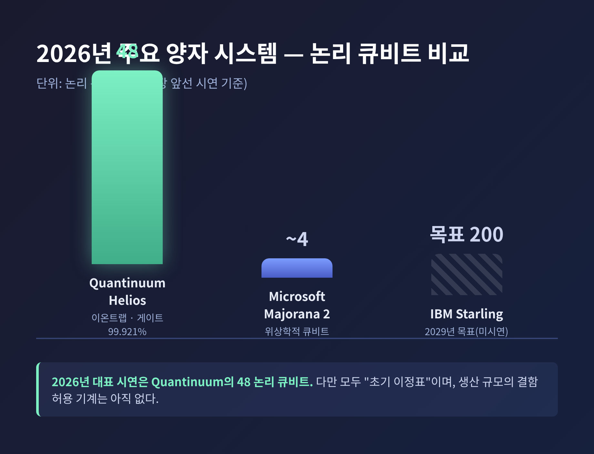
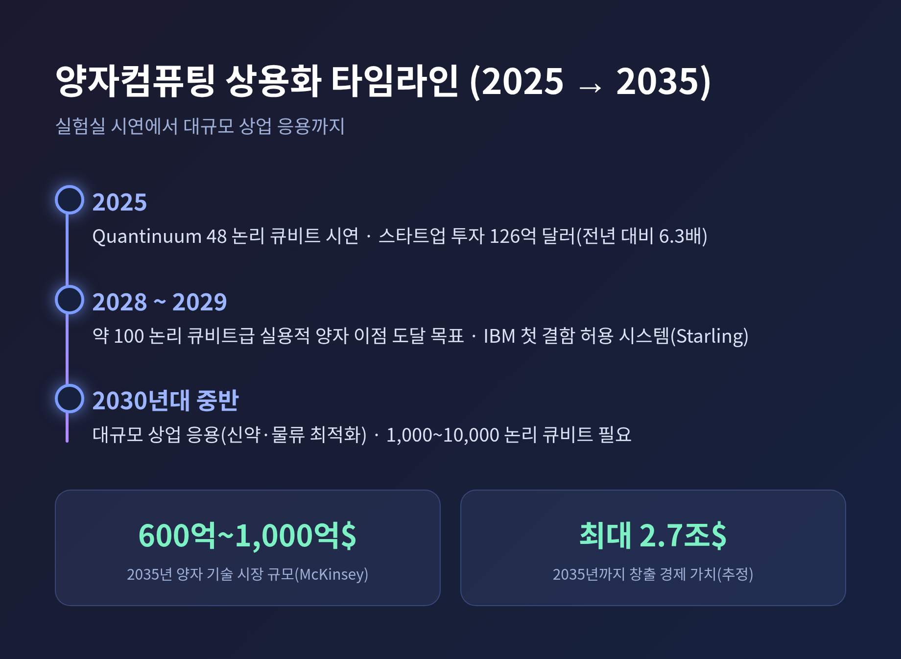

[IT] 양자컴퓨팅 2026 현재 수준 정리 — AI 다음 패권은 어디까지 왔나

이번 글에서는 2026년 시점의 양자컴퓨팅이 어디까지 왔는지를 정리해 보겠습니다.
빅테크 로드맵, AI와의 결합, 상용화 시점, 그리고 한국의 전략까지 한자리에 모았습니다.
세 줄 요약
- 2026년은 양자컴퓨팅이 단순 큐비트 수 경쟁을 넘어 '오류 정정된 논리적 큐비트' 단계로 진입한 변곡점입니다.
- 대표 성과는 Quantinuum의 48 논리 큐비트이며, IBM·구글은 2029년 결함 허용 컴퓨터를 목표로 합니다.
- 다만 대규모 상용화는 2030년대 중반이 현실적이라는 신중론이 함께 존재합니다.
핵심 답변부터 드리면 이렇습니다.
양자컴퓨팅은 "실험실 시연"을 지나 "초기 실용성"으로 막 들어선 단계입니다.
완성된 미래가 아니라, 이제 막 길이 보이기 시작한 단계라고 이해하시면 됩니다.
■ 양자컴퓨팅, 무엇이 다른가
고전 컴퓨터는 정보를 0 또는 1의 비트로 처리합니다.
양자 컴퓨터는 큐비트를 씁니다.
큐비트는 중첩이라는 성질 덕분에 0과 1을 동시에 가질 수 있습니다.
여러 큐비트가 얽힘 상태에 놓이면 표현할 수 있는 경우의 수가 기하급수적으로 커집니다.
그래서 소인수분해, 분자 시뮬레이션, 최적화 같은 특정 문제에서 고전 컴퓨터가 사실상 못 푸는 계산을 빠르게 풀 수 있습니다.
여기서 한 가지 구분이 중요합니다.
실제 하드웨어의 큐비트는 잡음에 취약해 오류가 잦습니다.
그래서 여러 물리적 큐비트를 묶어 안정적인 하나의 '논리적 큐비트'를 만듭니다.
즉 "큐비트가 몇 개냐"보다 "오류 정정된 논리적 큐비트가 몇 개냐"가 진짜 성능 지표입니다.
이 한 줄이 2026년 경쟁을 읽는 열쇠입니다.

■ 2026년, 경쟁의 무게중심이 옮겨갔습니다
예전엔 "큐비트를 몇 개 시연했느냐"가 자랑거리였습니다.
지금은 "오류 정정된 논리 큐비트를 확보했느냐"로 기준이 바뀌었습니다.
구글은 Willow 칩으로 '임계점 이하' 오류 정정을 시연했다고 밝혔습니다.
물리적 큐비트를 늘려 인코딩할수록 논리적 오류율이 누적되지 않고 오히려 기하급수적으로 줄어드는 현상을 관측했다는 뜻입니다.
확장형 오류 정정의 핵심 이정표로 꼽힙니다.
이온트랩 진영에서는 Quantinuum Helios가 눈에 띕니다.
2025년 11월 출시된 이 시스템은 98개 물리 큐비트로 48개 논리 큐비트를 구현했습니다.
2큐비트 게이트 충실도는 99.921%에 이릅니다.
컬러코드 오류 정정으로 물리:논리 약 2:1이라는 효율적 인코딩을 달성한 점이 특히 평가받습니다.
2026년 시점에서 가장 앞선 논리 큐비트 시연은 이 48개가 대표적입니다.
다만 모두 "초기 이정표" 수준입니다.
생산 규모의 결함 허용 기계는 아직 어디에도 없습니다.

■ 빅테크 로드맵 한눈에 보기
각 기업이 택한 기술 노선과 목표는 조금씩 다릅니다.
표로 정리하면 다음과 같습니다.
| 기업 | 큐비트 기술 | 2026 주요 행보 | 상용화·결함 허용 목표 |
|---|---|---|---|
| IBM | 초전도 | Nighthawk(360큐비트), Kookaburra(논리 정보 저장 모듈), 디코더 프로토타입 | 2026년 양자 이점 목표, 2029년 Starling(200 논리 큐비트) |
| 구글 | 초전도 | Willow 칩 '임계점 이하' 오류 정정 시연 | 2029년 오류 정정 양자 컴퓨터 |
| Microsoft | 위상학적 | Majorana 2 칩 공개, 신뢰성 1,000배 향상 주장, 아직 4-큐비트 수준 | 2029년 유용한 양자 시스템 |
| Amazon | 고양이 큐비트 | Ocelot 칩, 14 물리 큐비트 아키텍처, Braket 클라우드 | 구체 연도 미공개 |
| NVIDIA | SW·가속기 | Ising 오픈 AI 모델, CUDA-Q, NVQLink | 양자-고전 하이브리드 인프라 |
IBM은 "오류 문제를 3~4년 안에 풀고 2029년 Starling으로 본격 상용화를 열겠다"고 선언했습니다.
Starling은 자동 오류 정정되는 200개 논리 큐비트를 내세웁니다.
Microsoft의 Majorana 2는 위상학적 큐비트 노선의 진전입니다.
다만 칩은 아직 4-큐비트 수준이라, 외부에서는 회의적인 시선도 함께 있습니다.
■ AI와 양자, 누가 누구를 돕는가
흥미로운 점이 하나 있습니다.
2026년에는 "양자가 AI를 가속"하기 전에, 오히려 AI가 양자 하드웨어의 난제를 먼저 푸는 쪽으로 쓰입니다.
대표적 사례가 NVIDIA의 Ising입니다.
2026년 4월 공개된 이 오픈 AI 모델군은 양자 프로세서 보정과 오류 정정 디코딩을 겨냥합니다.
디코딩 속도는 최대 2.5배, 정확도는 3배 높였다고 합니다.
방향을 바꿔 보면, 가까운 미래의 AI는 순수 양자가 아닙니다.
고전 딥러닝이 양자 서브루틴을 모듈로 통합하는 하이브리드 구조가 현실적입니다.
양자 보조 프로세서가 GPU·TPU 옆에 들어가 최적화·샘플링 같은 특화 작업을 맡는 분업입니다.
물론 한계도 분명히 짚어야 합니다.
'양자 머신러닝'의 실용적 이점은 학계 일부에서 아직 불분명하다는 신중론이 남아 있습니다.
■ 한계와 상용화 시점, 솔직하게
기술적 벽은 여전합니다.
큐비트는 데코히런스 탓에 마이크로초~밀리초 안에 양자 상태를 잃습니다.
IBM 초전도 큐비트의 결맞음 시간은 약 100~200 마이크로초 수준입니다.
게이트 연산 오류율은 게이트당 약 0.1~1%입니다.
오류 정정 오버헤드도 큽니다.
신약 개발이나 대규모 물류 최적화처럼 실제 영향력 있는 응용에는 1,000~10,000개의 논리 큐비트가 필요합니다.
이 규모는 2030년대 중반이 더 현실적이라는 전망이 많습니다.
타임라인을 정리하면 이렇습니다.
약 100 논리 큐비트 수준의 실용적 양자 이점은 업계가 2028~2029년경 도달을 노립니다.
IBM의 첫 결함 허용 시스템은 2029년입니다.
대규모 상업 응용은 2030년대 중반입니다.
회의론도 새겨들을 만합니다.
이들은 "양자역학이 틀렸다"가 아니라 "상업화 타임라인이 과장됐다"고 지적합니다.
수십억 달러 투자에도 2024년 업계 총매출은 수천만 달러에 그쳤다는 점도 함께 언급됩니다.
그럼에도 시장 기대는 큽니다.
McKinsey는 양자 기술 시장이 2035년 600억~1,000억 달러에 이를 것으로 봤습니다.
양자컴퓨팅이 2035년까지 창출할 경제적 가치는 최대 2.7조 달러로 추정됩니다.
양자 기술 스타트업 투자는 2025년 126억 달러로, 전년 대비 6.3배 급증했습니다.

■ 한국의 양자 전략
한국도 2026년 들어 본격적으로 움직였습니다.
2026년 1월 29일, 정부는 '제1차 양자과학기술 및 양자산업 육성 종합계획'과 '제1차 양자클러스터 기본계획'을 처음 선포했습니다.
'Next-AI 시대를 선도'하겠다는 비전입니다.
2035년 장기 목표는 분명합니다.
세계 1위 퀀텀칩 제조국, 양자 인력 10,000명, 양자 기업 2,000개입니다.
투자 규모도 작지 않습니다.
과학기술정보통신부의 2026년 R&D 예산은 총 8조 1,000억 원이며, 이 중 차세대 전략기술 육성에 5조 9,000억 원이 들어갑니다.
양자클러스터는 2026년 3월부터 공모를 거쳐 8월에 총 5개를 지정할 계획입니다.
전문가들은 2026년을 한국 양자 산업이 '연구실'에서 '시장'으로 옮겨가는 전환의 해로 봅니다.
끝으로 한 마디만 더 드리겠습니다.
2026년의 양자컴퓨팅은 화려한 결승선이 아니라, 이제 막 윤곽이 잡힌 출발선에 가깝습니다.
"큐비트의 숫자가 아니라, 오류를 견디는 논리 큐비트가 진짜 경쟁이다."
몇 년 뒤 이 글을 다시 펼쳤을 때, 2026년이 어떤 해로 기록될지 궁금하시다면 — 지금부터 그 흐름을 함께 지켜보시길 권합니다.